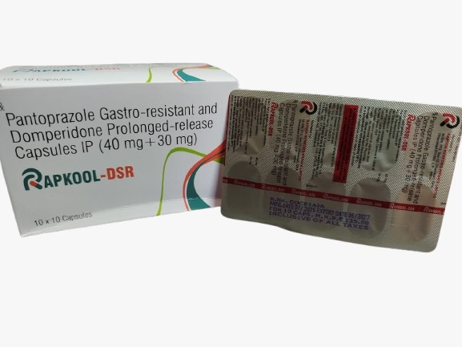

.png)
.png)
Comprehensive relief from Acid Reflux and Nausea.
A potent Proton Pump Inhibitor (PPI) that reduces gastric acid secretion by inhibiting the H+/K+ ATPase pump. It provides long-lasting relief from heartburn and helps heal the esophageal lining.
A dopamine antagonist with prokinetic properties. It increases the movements or contractions of the stomach and intestines, allowing food to move more easily through the digestive tract.
Rapkool DSR treats both the chemical and mechanical aspects of acid reflux. While Pantoprazole stops the overproduction of acid, Domperidone ensures that the stomach empties quickly, preventing the upward flow of gastric contents (reflux) and eliminating feelings of fullness and nausea.
The Pantoprazole component offers a stable and long-lasting effect, maintaining a higher pH in the stomach for a full day of comfort.
The SR formulation of Domperidone ensures steady drug levels throughout the day for consistent control of nausea and bloating.
Simultaneously addresses acidity and motility, which is more effective than taking a simple antacid for complex GERD.
By speeding up gastric emptying, it reduces the window of time where reflux can occur after meals.